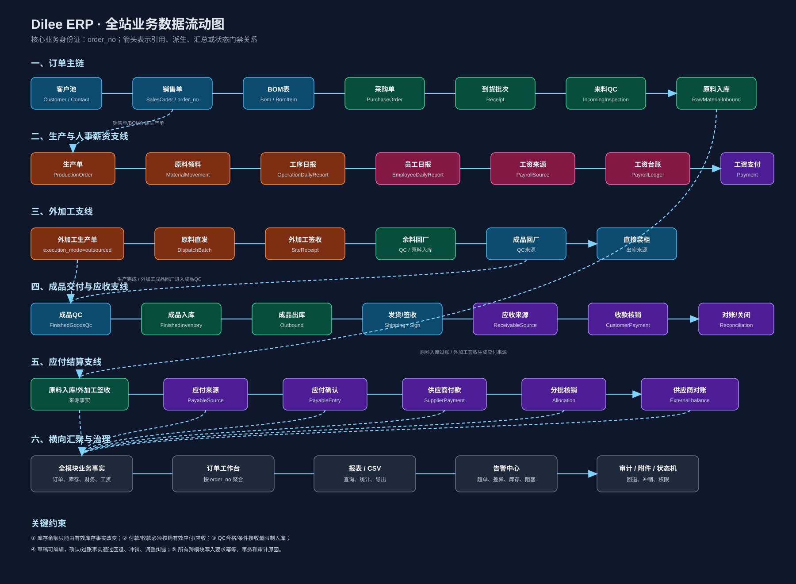

Dilee ERP · 全站数据字段字典
字段编号、表单绑定、上下游指针、联动类型与实现状态索引
统一业务身份：order_noUUID：内部关联库存事实驱动余额批次级追溯草稿 / 确认 / 过账 / 冲销
213统一字段编号（F-0001 ~ F-0213）
20+业务表单/工作区
23关键关系指针（R-0001 起）
13业务模块/支撑域
{kind=link}
一、字段编号与联动口径
F-xxxx 是统一字段语义编号，同一语义字段在不同表单中复用同一编号；具体表单位置通过表单绑定表表达。
R-xxxx 是上下游关系编号，用于描述字段或业务事实之间的引用、外键、快照、派生、汇总、状态门禁、库存事实、告警和回退/冲销关系。
HTML 是可浏览的索引版；所有字段逐条定义、类型、上下游和状态的完整清单保存在同目录 data-dictionary.md。
二、按模块字段范围
平台基础与公共字段
身份、状态、审计、幂等、附件、扩展字段
F-0001 ~ F-0014
客户池与销售
客户、联系人、销售单、订单号、客户/销售快照
F-0015 ~ F-0037
BOM
BOM版本、明细、原料、型号、颜色、用量与单位
F-0038 ~ F-0054
采购与来料质检
采购单、采购明细、到货批次、QC、超收与入库门禁
F-0055 ~ F-0079
原料仓库与生产领料
原料入库、库存事实、领料、退料、报废、冲销、预览
F-0080 ~ F-0096
生产主数据 / 生产单
员工、部门、岗位、工序、地点、生产单、生产工序、进度
F-0097 ~ F-0117
生产日报与工资来源
工序日报、员工日报、计件/计时、人工单价、差异告警
F-0118 ~ F-0130
外加工
外加工批次、直发、签收、余料回厂、成品回厂、直装柜
F-0131 ~ F-0138
成品质检与成品仓库
成品QC、合格/不合格、入库、不良品、出库、退货
F-0139 ~ F-0158
应收与客户对账
应收来源、收款、核销、退款/红字、调整、对账、关闭预览
F-0159 ~ F-0175
应付与供应商对账
应付来源、付款、核销、余额、供应商对账
F-0176 ~ F-0186
人事与工资支付
员工、考勤、绩效、工资台账、调整、工资支付
F-0187 ~ F-0203
工作台、报表与告警
订单搜索、阻塞原因、审计时间线、报表筛选、告警处理
F-0204 ~ F-0213
三、表单与字段绑定
| 模块 | 表单 / 工作区 | 字段编号 | 上游 | 下游 |
|---|---|---|---|---|
| 客户 | 客户新建/编辑 | F-0015~F-0020 | 人工录入 | 销售、财务 |
| 客户 | 联系人新建/编辑 | F-0021~F-0023 | 客户 | 销售单 |
| 销售 | 销售单新建/编辑/确认 | F-0002、F-0024~F-0037 | 客户、人工 | BOM、采购、生产、应收 |
| BOM | BOM新建/编辑/发布 | F-0038~F-0054 | 已确认销售单、原料池 | 采购、生产 |
| 采购 | 采购单新建/编辑/下单 | F-0002、F-0038、F-0055~F-0066 | BOM、供应商 | 到货、应付 |
| 采购 | 到货批次 | F-0002、F-0061~F-0073 | 采购明细 | QC、入库、应付 |
| 来料QC | 来料检验 | F-0067~F-0079 | 到货批次 | 原料入库、不良品 |
| 仓库 | 原料入库 | F-0080~F-0083 | 来料QC | 原料库存、应付 |
| 仓库 | 领料/退料/报废/冲销 | F-0005、F-0084~F-0096 | 生产单、库存 | 生产、库存、审计 |
| 生产 | 生产主数据 | F-0097~F-0106 | 人事/单位池 | 生产单、日报 |
| 生产 | 生产单/工序 | F-0002、F-0107~F-0117 | 销售单、BOM | 领料、日报、QC |
| 生产 | 工序日报/员工日报 | F-0118~F-0130 | 生产单、员工、工序 | 进度、告警、工资 |
| 外加工 | 直发/签收/回厂/直装柜 | F-0131~F-0138 | 采购、生产 | QC、库存、应付、应收 |
| 成品 | 成品QC/入库/不良品 | F-0139~F-0147 | 生产完成/外加工 | 出库、库存 |
| 成品 | 出库/发货/客户退货 | F-0148~F-0158 | 成品库存、销售单 | 应收、库存调整 |
| 财务 | 应收/收款/核销/对账 | F-0159~F-0175 | 出库、客户 | 订单关闭 |
| 财务 | 应付/付款/核销/对账 | F-0176~F-0186 | 到货、入库、外加工 | 供应商结算 |
| 人事 | 员工/考勤/绩效 | F-0097~F-0101、F-0187~F-0194 | 人工录入 | 日报、工资 |
| 人事/财务 | 工资台账/工资支付 | F-0118~F-0130、F-0195~F-0203 | 员工日报、HR数据 | 财务、报表 |
| 工作台 | 订单全链路 | F-0002、F-0204~F-0206 | 全模块 | 关闭检查 |
| 报表/告警 | 查询/导出/告警 | F-0207~F-0213 | 全模块事实 | 管理决策 |
四、关键字段示例
| 编号 | 技术字段 | 中文含义 | 上游 | 下游 | 联动 | 状态 |
|---|---|---|---|---|---|---|
| F-0002 | order_no | 订单号 | 销售单人工录入 | BOM、采购、生产、仓库、财务、工作台 | 引用/聚合 | 已实现 |
| F-0029 | order_quantity | 订单数量 | 销售单 | 生产计划、BOM、出库上限 | 引用/数量门禁 | 已实现 |
| F-0043 | material_id | 物料主数据 ID | 物料池 | BOM、采购、库存、领料 | 外键/边界校验 | 已实现 |
| F-0067 | receipt_id | 到货批次 ID | 采购明细 | 来料QC、原料入库、应付 | 外键/批次追溯 | 已实现 |
| F-0071 | received_quantity | 到货数量 | 到货表单 | QC上限、应付来源 | 数量门禁/派生 | 已实现 |
| F-0075 | accepted_quantity | 来料合格数量 | 来料QC | 原料入库 | 数量门禁 | 已实现 |
| F-0083 | inventory_quantity | 库存事实数量 | 入库/领料/退料/报废 | 库存余额、报表 | 库存事实 | 已实现 |
| F-0109 | planned_quantity | 生产计划数量 | 销售单 | 工序目标、完工、出库 | 引用/门禁 | 已实现 |
| F-0119 | operation_report_quantity | 工序日报完成量 | 工序日报 | 生产进度、超单告警 | 汇总/告警 | 已实现 |
| F-0124 | manual_unit_price | 人工填写单价 | 员工日报 | 工资金额 | 派生 | 已实现 |
| F-0125 | daily_salary_amount | 当日工资金额 | 件数/时长×单价 | 工资来源、工资台账 | 派生/汇总 | 已实现；待完整验收 |
| F-0141 | finished_qc_accepted_quantity | 成品QC合格数量 | 成品QC | 成品入库 | 数量门禁 | 已实现 |
| F-0149 | finished_outbound_quantity | 成品出库数量 | 出库表单 | 库存、应收 | 库存事实/派生 | 已实现；并发验收待完成 |
| F-0159 | receivable_source_id | 应收来源 ID | 成品出库 | 应收、收款核销 | 外键 | 已实现 |
| F-0169 | receivable_balance | 应收余额 | 应收-核销-调整 | 账龄、订单关闭 | 派生 | 已实现；待完整验收 |
| F-0176 | payable_source_id | 应付来源 ID | 到货/入库/外加工签收 | 应付、付款核销 | 外键 | 已实现 |
| F-0197 | payroll_total_amount | 工资台账总额 | 工资来源汇总/人工维护 | 工资支付、报表 | 汇总 | 已实现；T07治理中 |
| F-0211 | alert_type | 告警类型 | 业务规则 | 告警中心、工作台 | 告警 | 已实现 |
完整字段逐条明细请查看 data-dictionary.md，本页展示跨模块主字段和关系指针。
五、关键上下游关系指针
| 关系编号 | 上游 | 下游 | 类型 | 业务规则 |
|---|---|---|---|---|
| R-0001 | 客户 id | 销售单 customer_id | 外键 | 销售单必须关联有效客户 |
| R-0002 | 销售单 order_no | BOM/采购/生产/仓库/财务 order_no | 引用 | 全链路业务身份证 |
| R-0003 | 销售单确认状态 | BOM创建 | 状态门禁 | 未确认销售单不可创建正式BOM |
| R-0004 | BOM material_id | 采购明细 material_id | 引用 | 只能使用启用原料 |
| R-0005 | 采购明细 | 到货批次 | 外键/数量门禁 | 累计到货计算剩余量与超单 |
| R-0006 | 到货批次 | 来料QC | 外键/一对一 | 一批到货只生成一条有效QC记录 |
| R-0007 | 来料QC合格/条件接收量 | 原料入库 | 数量门禁 | 入库量不得超过可入库量 |
| R-0008 | 原料入库过账 | 原料库存余额 | 库存事实 | 仅过账事实改变库存 |
| R-0009 | 生产单 | 领料单 | 外键/状态门禁 | 进行中生产单才能领料 |
| R-0010 | 领料事实 | 退料/报废 | 来源约束 | 退料/报废只能引用已过账领料 |
| R-0011 | 生产单工序 | 工序日报/员工日报 | 外键/唯一性 | 按生产单、工序、员工、日期隔离 |
| R-0012 | 员工日报 | 工资来源 | 汇总/派生 | 件数或时长×人工单价 |
| R-0013 | 生产完成/外加工回厂 | 成品QC | 来源约束 | 外加工发出量不等于完成量 |
| R-0014 | 成品QC合格/条件接收量 | 成品入库 | 数量门禁 | 未检验/不合格不可入可用库存 |
| R-0015 | 成品入库过账 | 成品库存余额 | 库存事实 | 过账才增加可用成品库存 |
| R-0016 | 成品出库过账 | 应收来源 | 派生/一对一 | 出库数量×销售单价 |
| R-0017 | 应收来源 | 收款核销 | 外键/金额门禁 | 收款必须核销有效应收 |
| R-0018 | 到货/入库/外加工签收 | 应付来源 | 派生 | 默认数量×采购单价 |
| R-0019 | 应付来源 | 付款核销 | 外键/金额门禁 | 付款不得无来源或超额核销 |
| R-0020 | 全模块事实 | 订单工作台 | 工作台聚合 | 按 order_no 形成状态快照 |
| R-0021 | 业务规则 | 告警中心 | 告警 | 超单、差异、库存不足、链路阻塞 |
| R-0022 | 日报来源变化 | 工资台账 | 状态联动 | 草稿刷新；已确认/已支付转过期 |
| R-0023 | 退货/退款/红字/冲销 | 原事实 | 回退/冲销 | 不删除原事实，生成反向或调整事实 |
六、数据流动图
